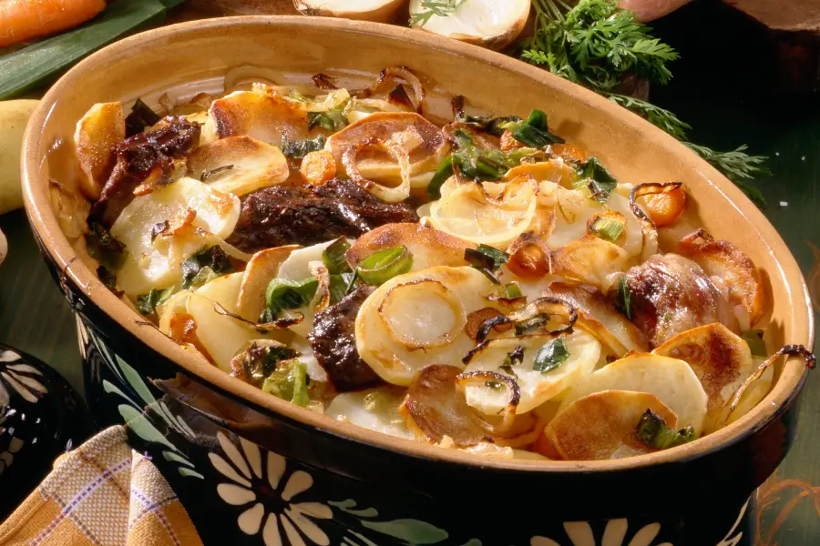

✧ Le Baeckaoffe Alsacien ✧

Le baeckaoffe (ou baeckaoffa en dialecte), est un plat alsacien savoureux,
qui associe des pommes de terre, des légumes et 3 types de viandes cuits
longuement au four dans un plat en terre bien fermé. A l’époque, les
femmes préparaient ce plat traditionnel du dimanche avec les restes de la
semaine. Elles le déposaient ensuite chez le boulanger le samedi soir,
afin que la terrine cuise longuement dans le four de celui-ci. Ce n’est
qu’à la sortie de la messe, le dimanche matin, qu’elles venaient le
récupérer. L’Histoire raconte également que le cordon de pâte qui fermait
hermétiquement le plat venait ainsi sceller le baeckaoffe, le rendant
“inviolable”. En effet, la terrine, abandonnée sans surveillance dans le
four du boulanger pouvait attiser les convoitises… Mais bien lutée,
impossible d’y prélever une « petite » portion sans laisser traces de son
passage ! Malignes les alsaciennes non ?! Et puis, cordon de pâte garant
de l’honnêteté du boulanger… La ménagère, récupérant un plat intact, ne
pouvait l’accuser de se nourrir à bon compte…
✧ Liste des ingrédients du baeckaoffe aux 3 viandes ✧
- 500 g d’échine ou épaule de porc
- 500 g d’épaule de mouton sans os
- 500 g de poitrine de bœuf désossée ou de paleron
- 1 kg de pommes de terre à chair ferme
- 2 blancs de poireaux
- 2 blancs de poireaux
- 8 carottes
- 250 g d’oignons
- 2 gousses d’ail
- 50 cl de vin blanc d’Alsace sec
- un bouquet garni
- persil, thym, laurier, sel et poivre
✧ Pour la pâte à luter :
- 400 g de farine
- 25 cl d'eau
✧ La recette ✧
La veille
-
Détaillez la viande en morceaux égaux. Placez la dans un plat avec
quelques oignons, l’ail, le bouquet garni, le poivre et rencouvrez de
vin blanc. Filmez et placez à mariner au réfrigérateur pendant une
nuit.
✧ Le Lendemain
-
Préparez la garniture de légumes. Épluchez les oignons et émincez-les
finement. Epluchez les carottes et détaillez-les en fines rondelles.
Lavez les poireaux, coupez-les en deux dans le sens de la longueur et
émincez-les finement. Hachez l’ail finement. Mélangez le tout.
-
Epluchez les pommes de terre et détaillez-les en fines rondelles de 2
mm d’épaisseur environ.
-
Déposez une couche de pommes de terre au fond d’une terrine en terre
cuite puis salez et poivrez. Recouvrez d’une couche de garniture de
légumes, salez et poivrez. Ajoutez une couche de viande. Déposez le
bouquet garni. Continuez les couches jusqu’à épuiser les ingrédients
en terminant par une couche de pommes de terre.
-
Arrosez l’ensemble avec la marinade. Complétez avec le vin restant et
ajoutez éventuellement de l’eau jusqu’à mi-hauteur.
- Préchauffez le four à 200°C.
-
Confectionnez une pâte en mélangeant la farine et de l’eau. Formez un
long boudin que vous disposerez tout autour de la terrine en appuyant
bien pour la faire adhérer. Refermez avec le couvercle et soudez en
faisant remonter la pâte sur les bords du couvercle.
-
Enfournez le plat durant 2h puis baissez le four à 170°C et poursuivez
la cuisson pendant 1h45.
- Servir tel quel dans la terrine où s’est effectuée la cuisson.